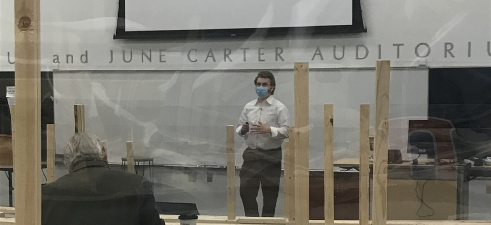
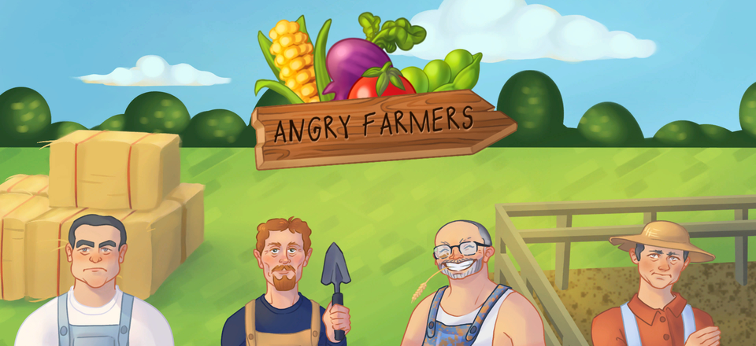

Hi. My name is Jake and I'm a software engineer.
This is where I post the projects I work on in my free time.
I've worked on everything from compilers to web pages, and I'm interested in just about anything that's Turing complete.
If you're a recruiter and you don't have my resume yet, you can find it
here.
An AI model developed in C++ which applies the Bellman equation through a Q-Function, utilizing either linear or polynomial regression to adjust the weights of features. Both epsilon-greedy and softmax are available as decision-making algorithms.
Chess in C++
A console application written in C++ to play chess in the command line. The program utilizes an abstract base class for all pieces that can be derived to add new types of pieces to the game. The most recent additions are MVC architecture, multithreading, and a minimax AI opponent.
MQTT Geocoding
A publishing client (C) sends a random latitude and longitude to an MQTT server. A subscribing client (C#) recieves the information and uses an API call to Bing's geocoding service to display a valid address, if any exists.

Senior Seminar
The seminar given at the end of my time in university. Other than the vocal fry I had from practicing all night, I'm happy with how well I was able to convey the information verbally. There are two presentations in this video; mine is the second one.

Capstone UI Design
Snapshots of the interface I developed as the UI lead and art director for a senior capstone project. The project reimplemented the turn-based game NODE with our own spin.